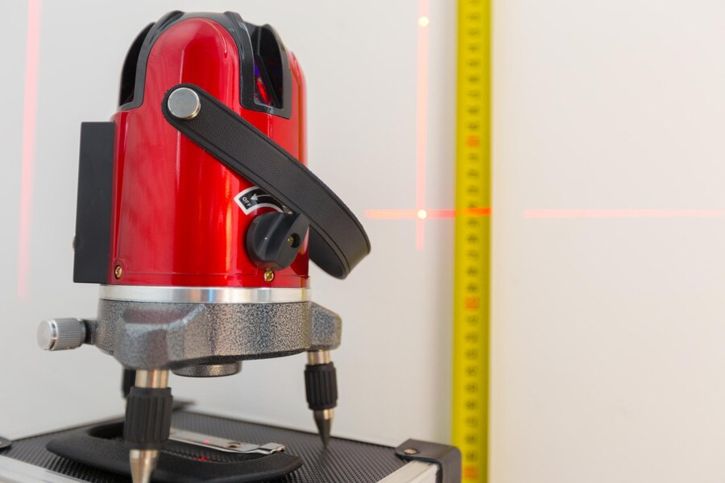
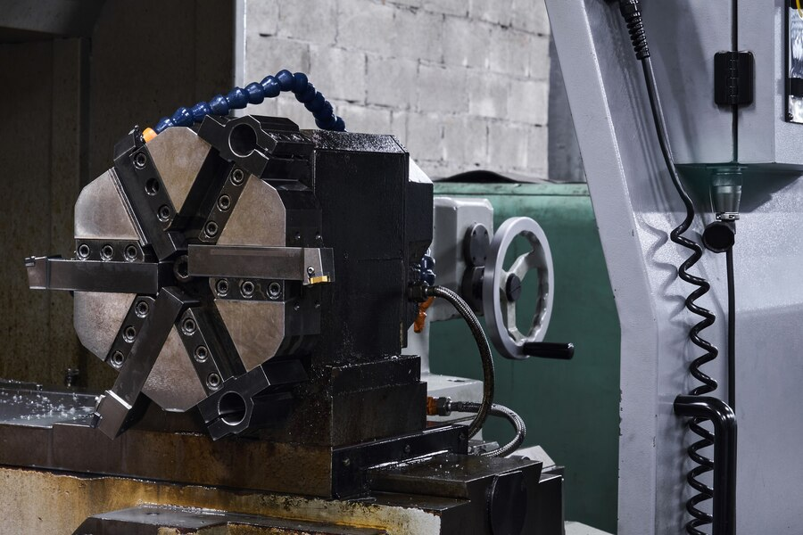

Dec 15, 2024
CSM Tube Bending: A Basis for Innovative Precision Engineering
How CSM tube bending technology is setting new standards for precision engineering and innovative manufacturing across India.
Read articleTechnology updates, application deep-dives and industry perspectives from the Cuttech team and our global partners.
Practical insights from the intersection of technology and production.
How CSM tube bending technology is setting new standards for precision engineering and innovative manufacturing across India.
Read article
Cuttech at Gartex — live demos, technology previews and conversations about the future of Indian manufacturing.
Read article
Exploring how Shell Be for Virtek by Cuttech brings next-generation precision measurement and laser projection to production floors.
Read article
How Hexagon Radan CAD/CAM software streamlines sheet metal fabrication — from nesting and programming to cutting and bending.
Read articleShare your process, material and capacity target. Cuttech can recommend a practical route forward.